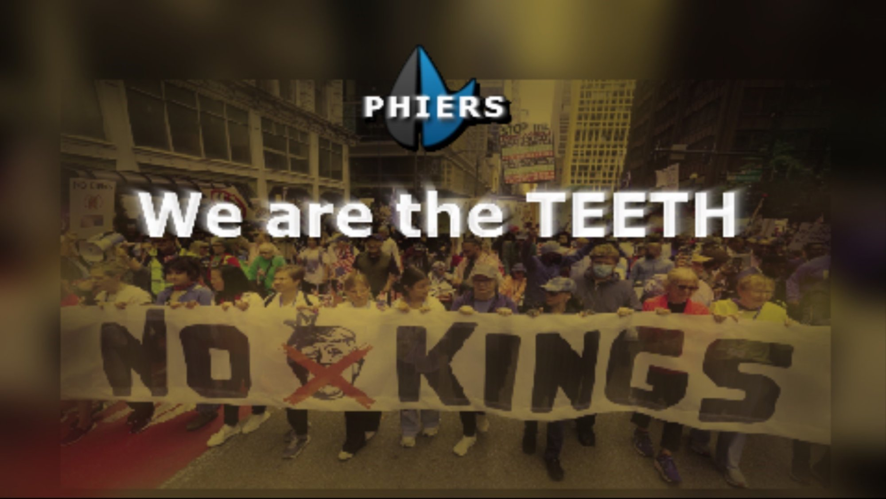

3.5% by March 28. 100M by July 4.
This is the line.
They priced America out of survival.
We're taking our power back.
22 million Americans were abandoned when Congress let subsidies expire. Premiums doubled. Families were left defenseless. This wasn't an accident — it was a choice.
PHIERS is the citizen movement using mathematical leverage to force Congress to fix healthcare — or replace them.
This is survival. Not politics. Not theory. Survival.
Congress let healthcare subsidies expire. 22 million people lost coverage overnight. Premiums doubled and tripled. People are choosing between medicine and food.
They had solutions on the table. They rejected both.
We're done waiting. We're organizing.
See the Crisis →The Math Congress Doesn't Want You to See
1 minute 11 seconds. This is why they're terrified.
One person switching from a $10,000 plan to a $600 telehealth plan frees enough money to fund 12–19 more people.
Those 12 fund 148. Those 148 fund 1,825. The cascade becomes unstoppable.
This is why Congress fears PHIERS. This is why 3.5% is enough.
3.5% = Guaranteed Change
Harvard research proves it: When 3.5% of a population organizes, systemic change becomes:
- Guaranteed
- Peaceful
- Non-negotiable
- Inevitable
For the U.S., that's 11.6 million people. We're organizing 100 million — nine times the threshold.
Congress has a binary choice:
A) Lead this — authorize telehealth in the ACA
B) Or face replacement — district by district
Validated by a Fortune 500 PR Firm
7 minutes 11 seconds. Hear it directly from PATHOS Communications.
Pathos Communications reviewed the math, the legality, the strategy, and the national-scale viability of PHIERS.
Their conclusion: This movement is real, publishable, and newsworthy.
"If we're talking to you right now, there is an available editorial window."
— PATHOS Editorial Team
"If you weren't legit, we wouldn't risk putting our name behind yours."
— PATHOS Senior Strategist
The PHIERS Timeline
Phase 1 — March 28
- 3.5% threshold reached
- District pressure ignites
- Congress loses the ability to ignore constituents
Phase 2 — April–June
- Town halls
- Media pressure
- Primary threats
- Coalition expansion
Phase 3 — July 4
- 100M unified
- Telehealth authorization forced
- Cascade begins
- Universal coverage becomes inevitable
Union Power: Why This Fight Is Winnable
5 minutes 55 seconds. This is the moment the movement becomes unstoppable.
America's 16 million union workers — and 50 million union voters — are already fighting for the same things PHIERS delivers:
- Healthcare
- Stability
- Dignity
- Economic security
This video explains why unions are the decisive force in the PHIERS strategy — and why elected leaders like Assemblymember Zohran Mamdani are already signaling the shift.
Union Power — Mamdani Strategy (5:55)
How organized labor becomes the engine of national change.
The Simple Math
$600/year covers 80% of healthcare needs.
$2.73 trillion in annual savings.
Universal coverage in 8–13 months.
This isn't ideology. This isn't theory.
This is arithmetic.
- One conversion funds 12–19 more
- Medicaid is the pressure point
- ACA follows
- Private insurance follows
- The uninsured follow
- The cascade completes
 See the Simple Math →
See the Simple Math →
These are the voices Congress ignores.
"My family member can't afford insurance. PHIERS gives us hope AND a plan. This is how we win."
— Small Business Owner, TX
"The math is undeniable. $600/year vs $10K? Congress can't ignore 3.5% organized. We have the power."
— Union Organizer, NY
"Congress abandoned 22 million of us. I'm not protesting anymore. I'm organizing. This is how we force them out."
— Healthcare Worker, CA
Four actions. Exponential impact.
We Are the TEETH
"Power concedes nothing without a demand."
PHIERS gives citizens the organized, strategic, district-level force to make that demand unavoidable.
This is not a protest. This is a pressure system.